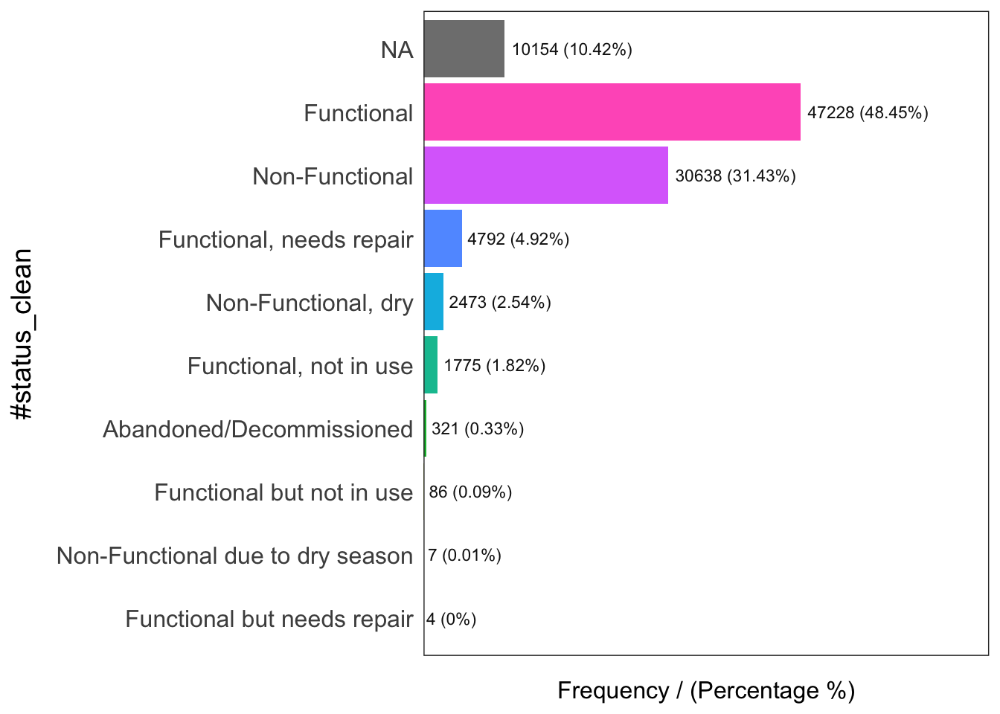
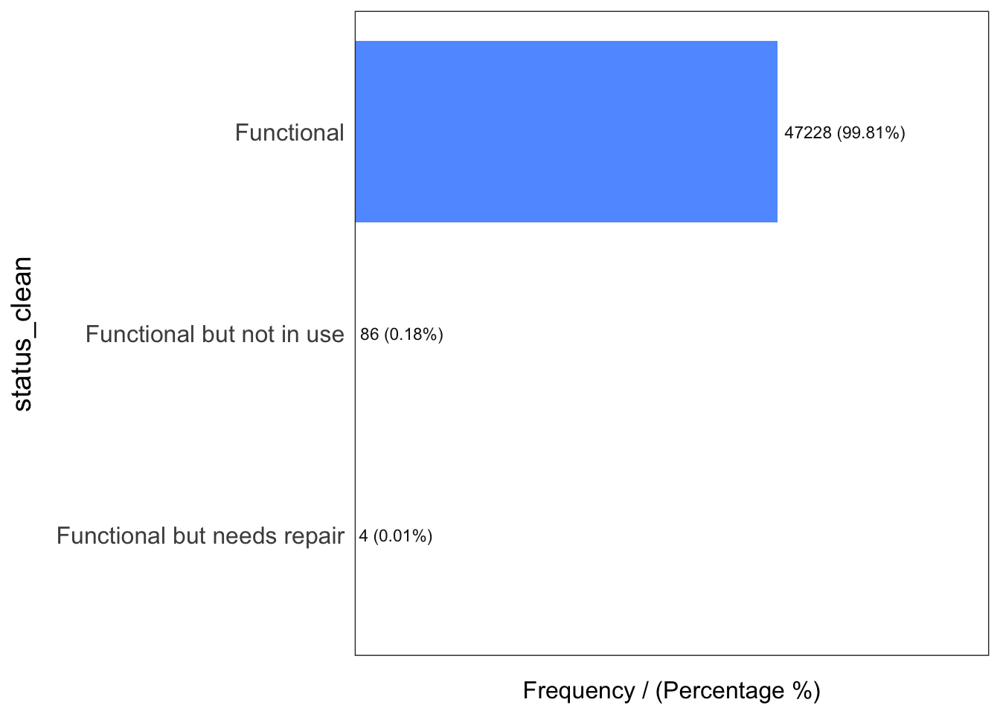
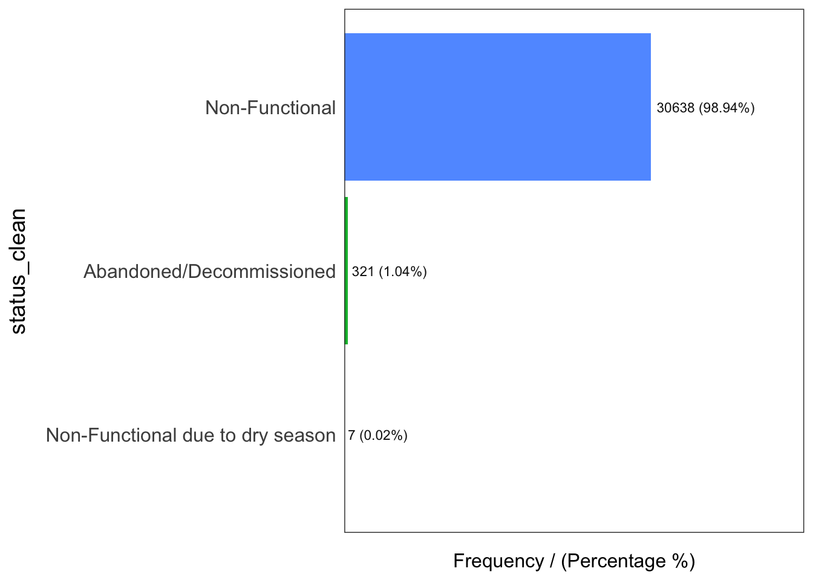
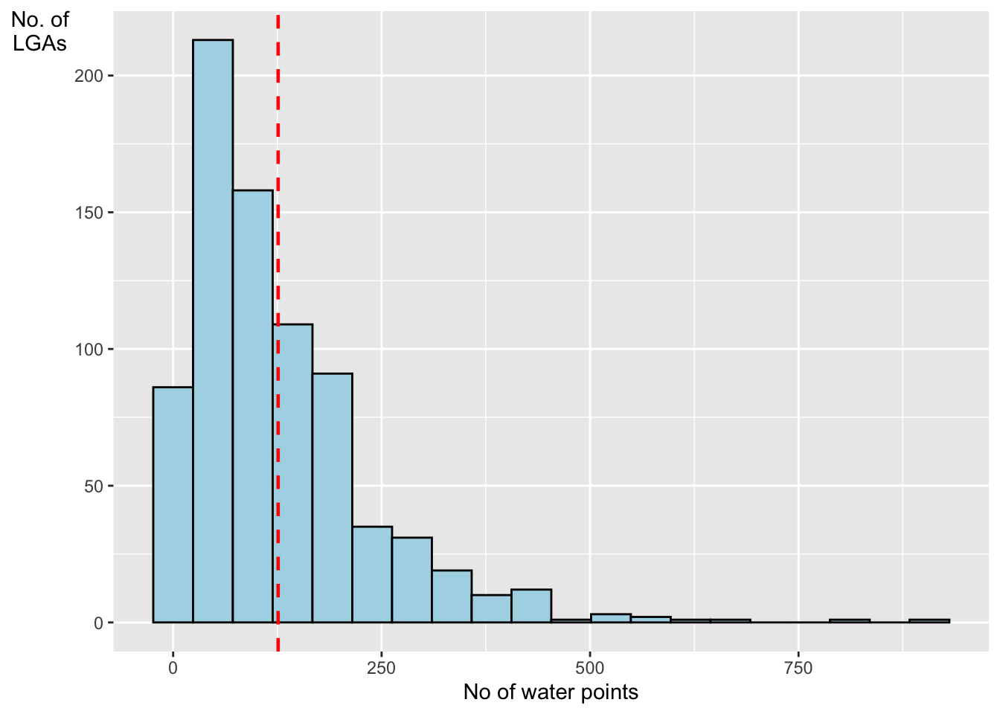

Show code
pacman::p_load(sf, tidyverse, funModeling)January 16, 2023
March 5, 2023
Water is an important resource to mankind. Clean and accessible water is critical to human health. It provides a healthy environment, a sustainable economy, reduces poverty and ensures peace and security. Yet over 40% of the global population does not have access to sufficient clean water. By 2025, 1.8 billion people will be living in countries or regions with absolute water scarcity, according to UN-Water. The lack of water poses a major threat to several sectors, including food security. Agriculture uses about 70% of the world’s accessible freshwater.
Developing countries are most affected by water shortages and poor water quality. Up to 80% of illnesses in the developing world are linked to inadequate water and sanitation. Despite technological advancement, providing clean water to the rural community is still a major development issues in many countries globally, especially countries in the Africa continent.
To address the issue of providing clean and sustainable water supply to the rural community, a global Water Point Data Exchange (WPdx) project has been initiated. The main aim of this initiative is to collect water point related data from rural areas at the water point or small water scheme level and share the data via WPdx Data Repository, a cloud-based data library. What is so special of this project is that data are collected based on WPDx Data Standard.
The specific tasks of this take-home exercise are as follows:
Using appropriate sf method, import the shapefile into R and save it in a simple feature data frame format. Note that there are three Projected Coordinate Systems of Nigeria, they are: EPSG: 26391, 26392, and 26303. You can use any one of them.
Using appropriate tidyr and dplyr methods, derive the proportion of functional and non-functional water point at LGA level.
Combining the geospatial and aspatial data frame into simple feature data frame.
Visualising the distribution of water point by using appropriate analytical visualisation methods.
##Importing Geospatial
geoBoundaries Data set
Reading layer `geoBoundaries-NGA-ADM2' from data source
`/Users/keredpoh/Desktop/keredpoh/IS415-GAA/In-class_Ex/In-class_Ex02/data/geospatial'
using driver `ESRI Shapefile'
Simple feature collection with 774 features and 5 fields
Geometry type: MULTIPOLYGON
Dimension: XY
Bounding box: xmin: 2.668534 ymin: 4.273007 xmax: 14.67882 ymax: 13.89442
Geodetic CRS: WGS 84NGA Data Set
NGA <- st_read("data/geospatial/",
layer = "nga_admbnda_adm2_osgof_20190417") %>%
st_transform(crs = 26392)Reading layer `nga_admbnda_adm2_osgof_20190417' from data source
`/Users/keredpoh/Desktop/keredpoh/IS415-GAA/In-class_Ex/In-class_Ex02/data/geospatial'
using driver `ESRI Shapefile'
Simple feature collection with 774 features and 16 fields
Geometry type: MULTIPOLYGON
Dimension: XY
Bounding box: xmin: 2.668534 ymin: 4.273007 xmax: 14.67882 ymax: 13.89442
Geodetic CRS: WGS 84Use filter to extract only “Nigeria”
Changes only the “New Georeferenced Column” but maintains wp_nga as a tibble dataframe Method in Hands-On_Ex1 also works
# A tibble: 97,478 × 75
row_id `#source` #lat_…¹ #lon_…² #repo…³ #stat…⁴ #wate…⁵ #wate…⁶ #wate…⁷
<dbl> <chr> <dbl> <dbl> <chr> <chr> <chr> <chr> <chr>
1 158721 Federal Minis… 5.07 6.62 02/19/… Yes Boreho… Well Mechan…
2 158892 Federal Minis… 5.09 7.09 02/06/… Yes Boreho… Well Hand P…
3 323117 Federal Minis… 5.91 8.77 08/31/… Yes Boreho… Well Hand P…
4 300176 Federal Minis… 5.23 7.32 05/17/… Yes Boreho… Well Mechan…
5 324346 Federal Minis… 6.88 3.36 08/17/… Yes Boreho… Well Mechan…
6 297273 Federal Minis… 6.59 3.29 05/26/… Yes Boreho… Well Mechan…
7 296853 Federal Minis… 6.60 3.26 06/02/… Yes Boreho… Well Mechan…
8 323866 Federal Minis… 6.20 6.73 09/18/… Yes Boreho… Well Mechan…
9 297044 Federal Minis… 6.61 3.30 05/26/… Yes Boreho… Well Mechan…
10 324321 Federal Minis… 6.96 3.60 08/16/… Yes Boreho… Well Mechan…
# … with 97,468 more rows, 66 more variables: `#water_tech_category` <chr>,
# `#facility_type` <chr>, `#clean_country_name` <chr>, `#clean_adm1` <chr>,
# `#clean_adm2` <chr>, `#clean_adm3` <chr>, `#clean_adm4` <chr>,
# `#install_year` <dbl>, `#installer` <chr>, `#rehab_year` <lgl>,
# `#rehabilitator` <chr>, `#management_clean` <chr>, `#status_clean` <chr>,
# `#pay` <chr>, `#fecal_coliform_presence` <chr>,
# `#fecal_coliform_value` <dbl>, `#subjective_quality` <chr>, …Convert wp_NGA into an sf data.frame and transforming it into the Nigeria projected coordinate system
Simple feature collection with 97478 features and 74 fields
Geometry type: POINT
Dimension: XY
Bounding box: xmin: 28907.91 ymin: 33736.93 xmax: 1293293 ymax: 1092883
Projected CRS: Minna / Nigeria Mid Belt
# A tibble: 97,478 × 75
row_id `#source` #lat_…¹ #lon_…² #repo…³ #stat…⁴ #wate…⁵ #wate…⁶ #wate…⁷
* <dbl> <chr> <dbl> <dbl> <chr> <chr> <chr> <chr> <chr>
1 158721 Federal Minis… 5.07 6.62 02/19/… Yes Boreho… Well Mechan…
2 158892 Federal Minis… 5.09 7.09 02/06/… Yes Boreho… Well Hand P…
3 323117 Federal Minis… 5.91 8.77 08/31/… Yes Boreho… Well Hand P…
4 300176 Federal Minis… 5.23 7.32 05/17/… Yes Boreho… Well Mechan…
5 324346 Federal Minis… 6.88 3.36 08/17/… Yes Boreho… Well Mechan…
6 297273 Federal Minis… 6.59 3.29 05/26/… Yes Boreho… Well Mechan…
7 296853 Federal Minis… 6.60 3.26 06/02/… Yes Boreho… Well Mechan…
8 323866 Federal Minis… 6.20 6.73 09/18/… Yes Boreho… Well Mechan…
9 297044 Federal Minis… 6.61 3.30 05/26/… Yes Boreho… Well Mechan…
10 324321 Federal Minis… 6.96 3.60 08/16/… Yes Boreho… Well Mechan…
# … with 97,468 more rows, 66 more variables: `#water_tech_category` <chr>,
# `#facility_type` <chr>, `#clean_country_name` <chr>, `#clean_adm1` <chr>,
# `#clean_adm2` <chr>, `#clean_adm3` <chr>, `#clean_adm4` <chr>,
# `#install_year` <dbl>, `#installer` <chr>, `#rehab_year` <lgl>,
# `#rehabilitator` <chr>, `#management_clean` <chr>, `#status_clean` <chr>,
# `#pay` <chr>, `#fecal_coliform_presence` <chr>,
# `#fecal_coliform_value` <dbl>, `#subjective_quality` <chr>, …##Exclude redundent fields
[1] "Bassa" "Ifelodun" "Irepodun" "Nasarawa" "Obi" "Surulere"Correct the areas as they are located in different states
NGA$ADM2_EN[94] <- "Bassa, Kogi"
NGA$ADM2_EN[95] <- "Bassa, Plateau"
NGA$ADM2_EN[304] <- "Ifelodun, Kwara"
NGA$ADM2_EN[305] <- "Ifelodun, Osun"
NGA$ADM2_EN[355] <- "Irepodun, Kwara"
NGA$ADM2_EN[356] <- "Irepodun, Osun"
NGA$ADM2_EN[519] <- "Nasarawa, Kano"
NGA$ADM2_EN[520] <- "Nasarawa, Nasarawa"
NGA$ADM2_EN[546] <- "Obi, Benue"
NGA$ADM2_EN[547] <- "Obi, Nasarawa"
NGA$ADM2_EN[693] <- "Surulere, Lagos"
NGA$ADM2_EN[694] <- "Surulere, Oyo"Rerun code to check
freq() showcase the distribution of waterpoint status visually.

#status_clean frequency percentage cumulative_perc
1 Functional 47228 48.45 48.45
2 Non-Functional 30638 31.43 79.88
3 <NA> 10154 10.42 90.30
4 Functional, needs repair 4792 4.92 95.22
5 Non-Functional, dry 2473 2.54 97.76
6 Functional, not in use 1775 1.82 99.58
7 Abandoned/Decommissioned 321 0.33 99.91
8 Functional but not in use 86 0.09 100.00
9 Non-Functional due to dry season 7 0.01 100.01
10 Functional but needs repair 4 0.00 100.00replace_na(status_clean, “unknown”) : replaces all NA to unknown within status_clean variable
Filter based on functional, non_functional and unknown respectively.

status_clean frequency percentage cumulative_perc
1 Functional 47228 99.81 99.81
2 Functional but not in use 86 0.18 99.99
3 Functional but needs repair 4 0.01 100.00
status_clean frequency percentage cumulative_perc
1 Non-Functional 30638 98.94 98.94
2 Abandoned/Decommissioned 321 1.04 99.98
3 Non-Functional due to dry season 7 0.02 100.00NGA_wp <- NGA %>%
mutate(`total_wp` = lengths(
st_intersects(NGA, wp_sf_nga))) %>%
mutate(`wp_functional` = lengths(
st_intersects(NGA, wp_functional))) %>%
mutate(`wp_nonfunctional` = lengths(
st_intersects(NGA, wp_nonfunctional))) %>%
mutate(`wp_unknown` = lengths(
st_intersects(NGA, wp_unknown)))ggplot(data = NGA_wp,
aes(x = total_wp)) +
geom_histogram(bins = 20,
color = "black",
fill ="light blue") +
geom_vline(aes(xintercept=mean(total_wp, na.rm=T)),
color = "red", linetype="dashed", size = 0.8) +
xlab("No of water points") +
ylab("No. of\nLGAs") +
theme(axis.title.y = element_text(angle = 0))